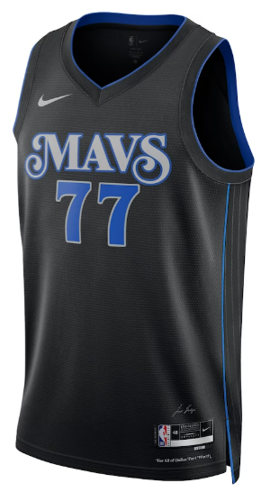
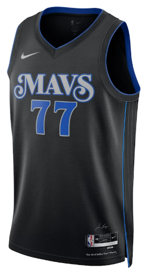

WHO'S YOUR FAVORITE LUKA? LEARN THE HISTORY...

Dallas Mavericks
Luka Doncic fue drafteado por los dallas mavericks el 21 de 2018 siendo el mejor jugador de su equipo
Real Madrid
Con 13 años llega al Real Madrid Luka Doncic, un chico que estaba destinado a marcar una epoca en el baloncesto. Se convierte en el mejor jugador de Europa con sólo 19 años, batiendo todos los records.
Eslovenia
En 2017 Luka Doncic gana la medalla de oro con Eslovenia
ALL-STAR
Luka Doncic ha sido ALL-STAR los ultimos 5 años

 
